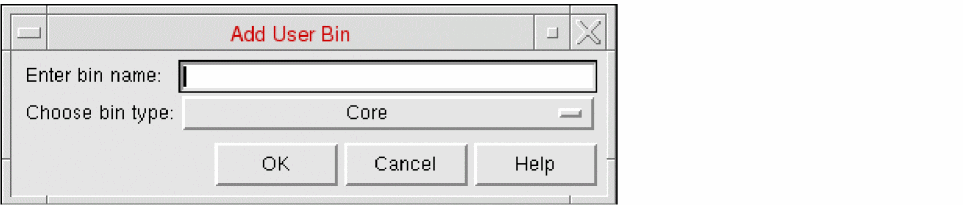

Adding a User Bin in Abstract Generator
在 Abstract Generator 中添加用户 Bin
Bins are like buckets for placing cells. Each cell in a library is always contained in one bin. Each bin is associated with certain options, which allows the cells in a library to be distributed into mutually exclusive sets for processing.
Bin 类似于用于放置 cell 的“桶”。库中的每个 cell 总是属于某一个 bin。每个 bin 都关联一组特定选项，使得库中的 cell 可以被分配到互斥的集合中进行处理。
To add a new user bin to the list of existing bins:
要在现有 bin 列表中添加新的 user bin：
-
Choose Bins – Add option.

- Type the name of the new bin in Enter bin name. The bin name should not contain any spaces.
- In Choose bin type, select a bin from the drop-down list. The bin type determines the default options settings for the new bin. Therefore, for example, if you create a new user bin of type Core, the user bin options will be identical to those currently set for the default Core bin.
- Click OK.
- 选择 Bins – Add 选项。
- 在 Enter bin name 中输入新 bin 的名称。bin 名称不应包含空格。
- 在 Choose bin type 中，从下拉列表选择一个 bin。bin type 决定新 bin 的默认选项设置。例如，如果你创建一个类型为 Core 的新 user bin，则其选项将与默认 Core bin 当前的设置一致。
- 点击 OK。
Abstract Generator adds the new bin and displays it at the bottom of the list in the Bins pane.
Abstract Generator 会添加该新 bin，并将其显示在 Bins 窗格列表的底部。
Related Topics
相关主题
Bin Preferences for Abstract Generation
Return to top